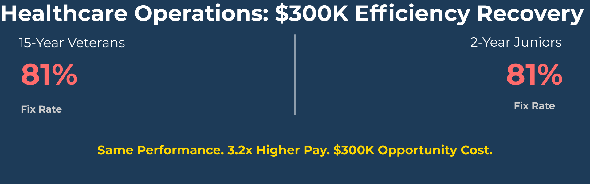
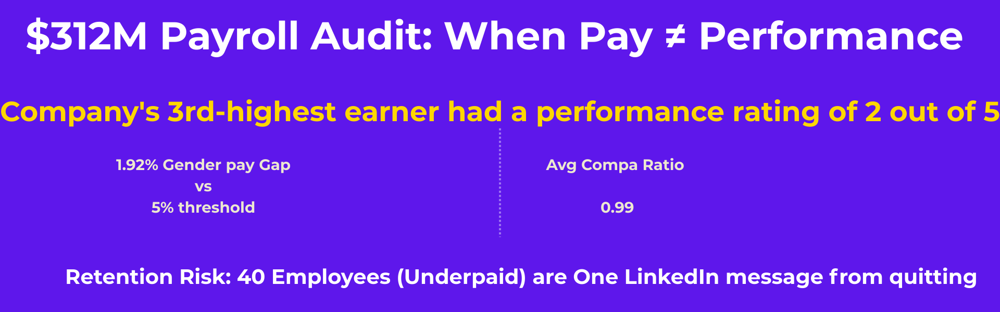

Audited a $1.67M annual bonus program for a global healthcare equipment provider and discovered the "Tenure Trap": 15-year Master Technicians performing identically to 2-year Juniors (81% fix rate) while commanding 3.2x higher compensation. Identified $300K in annual cost optimization, exposed critical Year-6 asset failures driving 240+ repeat service calls, and built a dynamic forecasting tool that eliminated weeks of static Excel modeling. This project challenged HR policy and gave leadership the data to choose between comfortable assumptions and uncomfortable truths.


Analyzed a 2,000-person European workforce and uncovered systemic retention failures: found employees stuck at Entry Level for 7+ years, an IT Director that earned $414K (top 3 earner) with a performance rating of 2/5, and 40 employees paid below market midpoint (flight risks). Built a Power BI model that exposed retention risks and a "pay-for-performance" system that was rewarding for tenure, not performance. Compliance achieved, but equity requires uncomfortable choices.

Analyzed 10,000 café transactions and identified $2,400-3,200/month in revenue recovery: cash bottlenecks losing 20-30 Friday customers, 50% of patrons under-spending at $4-12, and untapped combo upselling potential. Built Excel dashboard quantifying payment friction costs and dine-in premium (30% higher spend).

Built a low-code Purchase Request & Approval System using Microsoft Power Platform to automate procurement workflows. The system improves efficiency, reduces delays, provides real-time notifications, and demonstrates skills in workflow automation, low-code app design, and Microsoft 365 integration.

Built an end-to-end ELT pipeline using NYC Open Data API, DuckDB, and Python to analyze elevator complaint patterns. Demonstrated geospatial analytics, automated data engineering workflows, and trend identification across 5 boroughs.